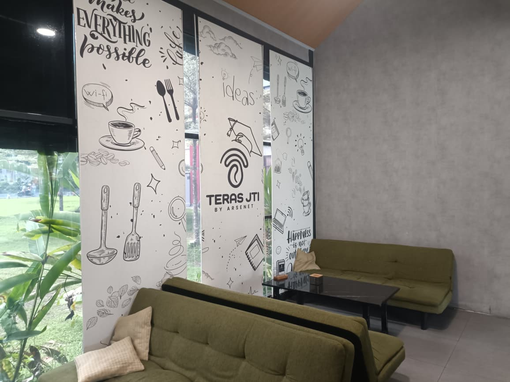

Daftar Menu



Tentang kami
TERAS JTI adalah kafe di belakang Gedung Jurusan Teknologi Informasi, Politeknik Negeri Jember. Kami menyediakan kopi, makanan, dan tempat nongkrong yang nyaman. Kami juga menawarkan menu yang sangat banyak.
- Nongkrong santai
- Senin – Sabtu
- Pukul 08.00 – 17.00
Fasilitas
WiFi
Tetap terhubung untuk mengerjakan tugas atau sekadar bersantai.
Colokan listrik
Cas laptop dan HP sambil duduk, tanpa khawatir baterai habis.
Ruangan ber-AC
Ruangan yang sejuk supaya nongkrong terasa lebih nyaman.
Siap pesan? Mulai dari TERAS JTI.
Tanpa antre, tanpa ribet. Pesan dari mana saja.
Alamat
(Belakang Gedung jurusan Teknologi Informasi
Politeknik Negeri Jember)
Senin – Sabtu
08.00 – 17.00
Kontak
@terasjti